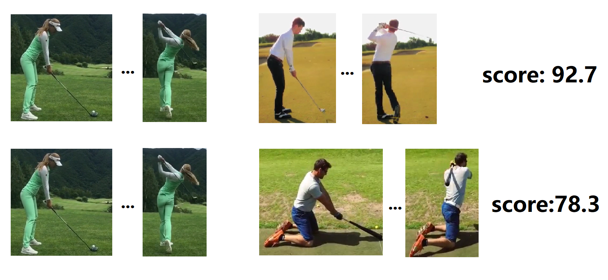
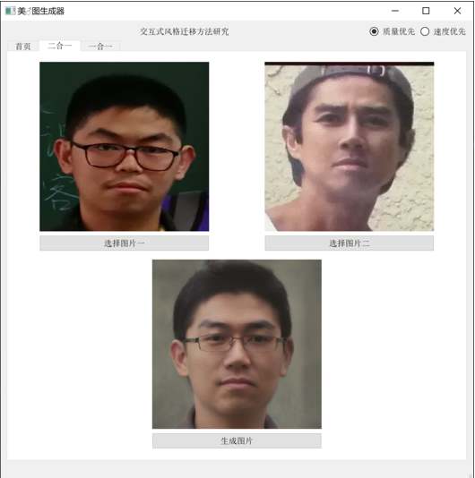
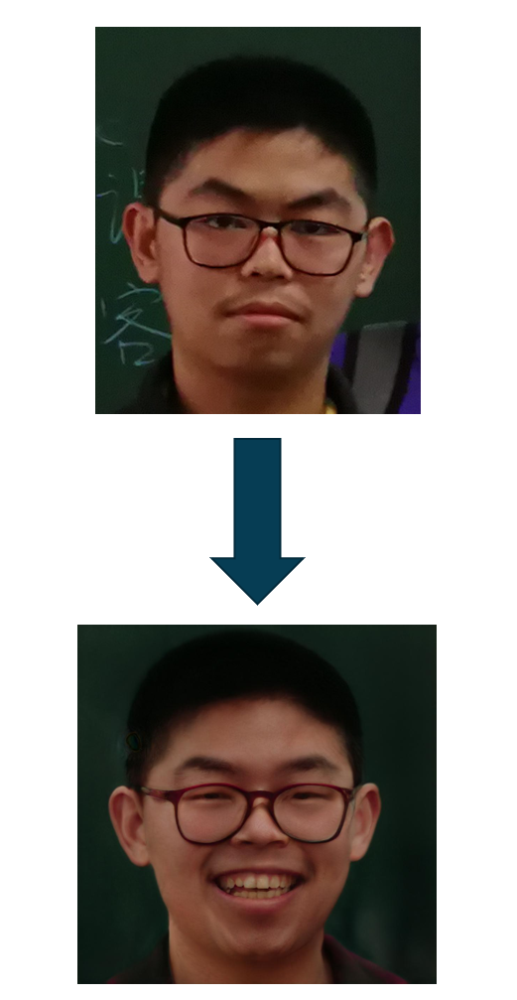
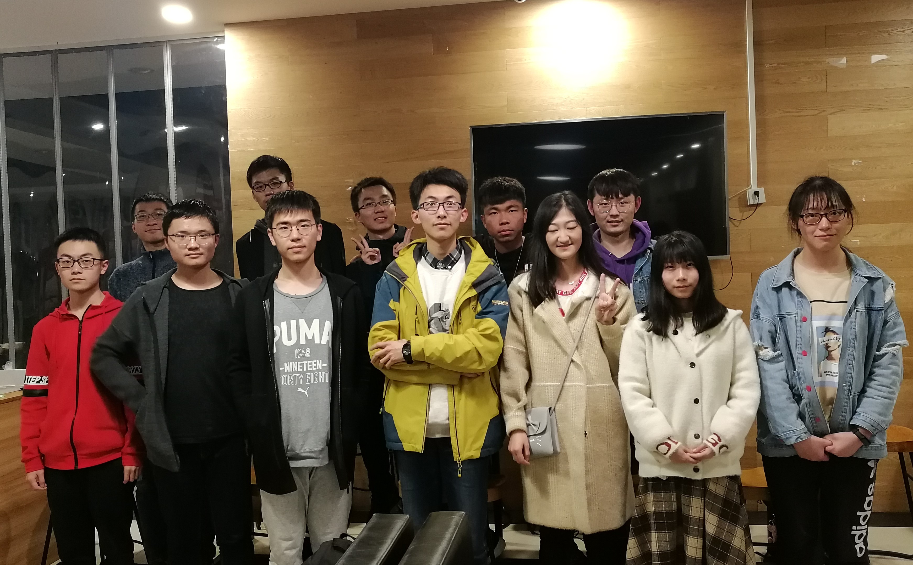
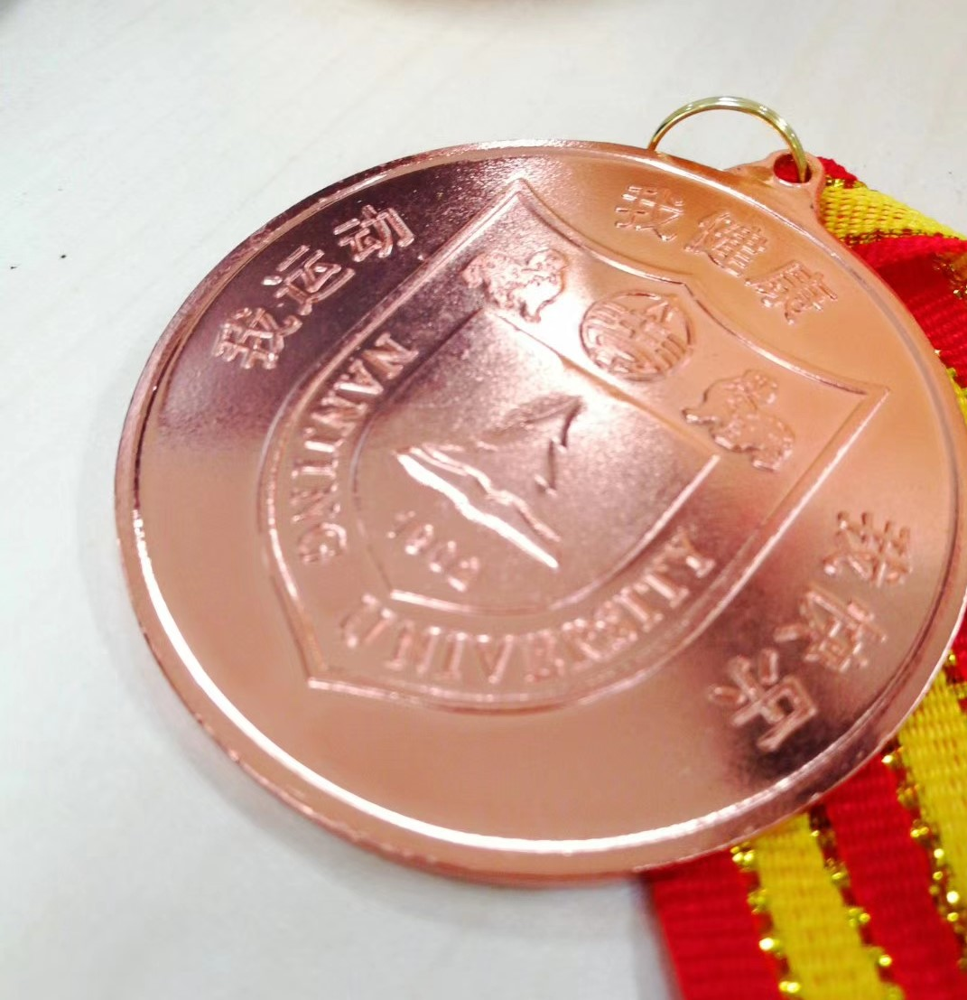

Hello! This website is my personal portfolio. Here is the list of information for your reference:
- [Biography] section introduces my education background briefly.
- [Internship] section related to my internship experience, which proves my capability of handling complex projects.
- [Research Projects & Experience] section includes detailed descriptions about my experience and research project.
- [Awards & Honors] section lists some awards and honors I achieved during undergraduate.
- [Miscellaneous] section presents my extracurricular activities in diverse aspects.
Hope you enjoy your visit on my homepage! :)
Biography
I was admitted to study in department of Computer Science and Technology, Nanjing University in September 2017, and joined the National Elite Program of Computer Science at Nanjing University after enrollment. I also attended Vancouver Summer Program at The University of British Columbia in summer, 2019. You may see my latest CV here.
[top]
Internship
Internship in Tencent. 2020.3-2020.6
In Tencent I work for Interactive Entertainment Group, developing game client and engine. Currently I am focusing on converting game model to convex-hull physics collision model, along with detecting fissures and fixing holes on model automatically.
The conversion process requires understanding of a certain physics engine, along with another library.
I am capable of quickly familiarizing with them by reading documents and thus efficiently participate in the actual development process.
Internship in Microsoft. 2020.1-2020.3
I worked on enabling voice recognition feature for Office Mobile on Android devices, based on the well-known cortana module.
During this process, I dived into real industry-level projects and accumulated experience on complex project development.
I also cooperated with US colleagues, which not only made me get used to English working environment, but also enhanced my international communication skills greatly.
[top]
Research Projects & Experience
Nanjing University MCG group research. 2019.9-2020.1
|  |
Supervised by Prof. Gangshan Wu,
I worked on evaluating the accuracy of people doing the same action by understanding the pose information in video. To be more specific, I extracted
joint position based on openpose, then computed the list of joint angle chronologically.
Even people who are doing the exact same action cannot have the same joint angle list on frame level, so dynamic time warping algorithm was used to compute
the accumulated distance, thus evaluating the similarity between the two lists. I also extended the evaluation process to 3D if joint coordinates are provided.
Under such circumstance, the body plane was used as reference plane and dynamic time warping algorithm was applied in three dimensions respectively.
The final computed result nicely reflected the accuracy between poses in two videos.
|
Face composition and style transfer. 2019.10-2019.12
|  |
I completed a face image transformation system cooperated with my classmates. The basic idea
is to use a "styleGAN encoder" which converts images to features. The features are then much easier to manipulate numerically. To mix two faces,
just compute the average of the features, then use styleGAN to convert the feature to image again.
Adding trained smile feature to origin feature can make the original face smile as well. By setting coefficient as user input,
the extent one smiles or the ratio two faces respectively count can be dynamic adjusted as well, giving this project high practical value.
|
Stanford cs231n course assignment 2019.2-2019.8
I self-studied the famous computer vision course Stanford cs231n and completed the assignments, code link is here.
During this process I have learned lots of computer vision and deep learning related knowledge, such as the theory behind neural network
and the function of different layers, and gained a more comprehensive understanding of the domain foundation.
Innovative project "Investment Guide for B&B
Based on Machine Learning - Take Nanjing as an Example". 2018.9-2019.6
Served as the technical backbone of the team, I was responsible for data crawling, data cleaning and models training. The project uses
linear regression model and
could effectively predict the price of flats based on input information such as area, number of rooms and its position in Nanjing city,
thus giving investors a valuable guide on B&B or flat rent investment.
HKUST academic competition. 2019.2
In February 2019 I visited a series of Hong Kong universities including HKU, HKUST, CUHK and PolyU. During visiting HKUST, I participated in a Kaggle competition on predicting the running time of sklearn program and worked as leader of our team. It was an interesting and instructive competition because we could use the sklearn library itself to predict the running time of sklearn program. I did most of data preprocessing and code work. This experience provided me with a more concrete understanding of machine learning.
[top]
Awards & Honors
- Model of excellent student cadres of Nanjing University. 2019
- Specialty Prize of Elite Program Scholarships Award. 2019
- Second Prize (2nd in all participants) of Nanjing University Microsoft Club and Tencent Club Hackathon Competition 2019
- Gold Award of Nanjing University 16th Algorithm Design Competition. 2019
- Finalist of NJU-vivo-2019-hackathon Competition. 2019
- Bronze Award of Nanjing University 15th Algorithm Design Competition. 2018
- Third Prize of Elite Program Scholarships Award. 2018
[top]
Miscellaneous
1. Leader of External Relations Section in Student Union of Department of Computer Science and Technology
|  |
Leading 12 members of the section, responsible for external liaison, handling various matters and was trusted by members, these are what I did and got as the leader of External Relations Section.
As one of the main organizers, I participated in the planning of Nanjing University’s largest department welcome party in recent years, which attracted more than 4,000 spectators.
As the team leader, I accumulated a lot of team management experience and communication skills in practice, and is more adept at teamwork and public expression.
|
2. Hosting department new year gala
|
I started to host various parties or meetings since primary school. But the department new year gala
in my freshman year is undoubtedly the grandest gala I have ever hosted for. Standing on the theater stage in front of
thousands of spectators, it is surely an unforgettable memory :)
|
3. My hobby of running
|  |
I have been an active runner for a long time. I once finished half marathon in 1hr46min, and I also won a bronze medal for 3000m running in Nanjing University's sports meeting.
I think running is a good adjustment to daily life. When something puzzles or depresses me, running
can always make me relaxed and feel positive again.
|
[top]